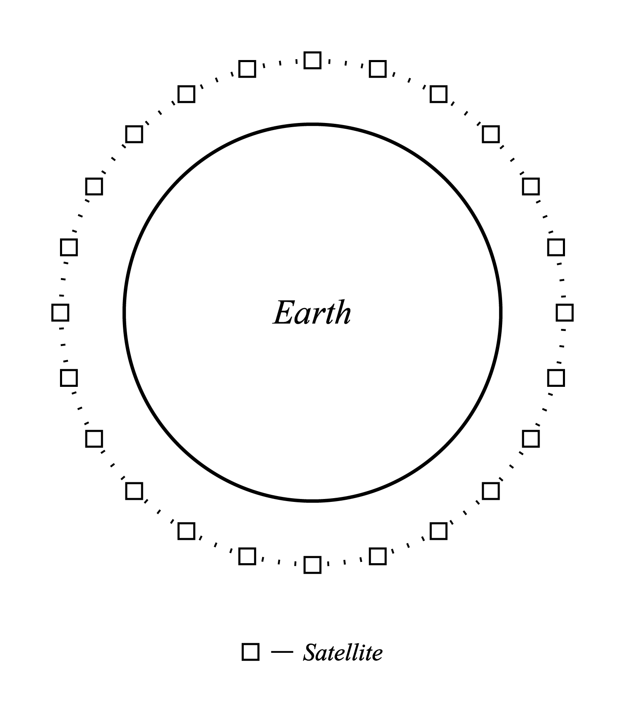

GPS
US Military maintains via 24 orbiting satellites
4 satellites always have direct view of your reciever
Receiver communicates with 3 satellites to calculate location: Trilateration
Atomic Clocks in order to calculate location of satellites
AGPS
Cellphone and Phone company act as reciever
Cell tower acts as satellite
Similar process as GPS, satellites are less directly involved, more reliant on corporate entity
Cellular GPS usage is heavy on bandwidth and could be charged, but at the moment is not
